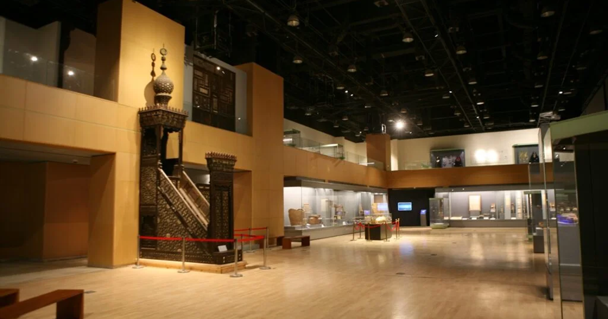

|
In 1982, UNESCO has launched at the request of the Egyptian government, a
global campaign for the establishment of the
Nubia Museum in Aswan and NMEC in Cairo. The existing design, by an Egyptian architect, was the
winner of an
international architectural competition.
In 1999, the joint efforts of the Egyptian Government resulted in finding a suitable site at
Al-Fustat neighborhood for
the birthplace of the NMEC project. This specific site was chosen instead of the previously selected
one, currently
known as “Opera”.
NMEC’s foundation stone was laid in 2002, despite the archeological excavations that took place at
the museum’s areas
since the early 2000s. The joint efforts of UNESCO, the Egyptian Authorities, and the Ministry of
Culture collectively
aimed at establishing a museological institution that reflects the various cultural aspects of
Egypt’s rich history
through adopting aesthetically and technologically advanced methods used at the 21st renowned
museums.
|
 |
|  |
In 1982, UNESCO has launched at the request of the Egyptian government, a
global campaign
for the establishment of the
Nubia Museum in Aswan and NMEC in Cairo. The existing design, by an Egyptian architect, was the
winner of an
international architectural competition.
In 1999, the joint efforts of the Egyptian Government resulted in finding a suitable site at
Al-Fustat
neighborhood for
the birthplace of the NMEC project. This specific site was chosen instead of the previously selected
one,
currently
known as “Opera”.
NMEC’s foundation stone was laid in 2002, despite the archeological excavations that took place at
the museum’s
areas
since the early 2000s. The joint efforts of UNESCO, the Egyptian Authorities, and the Ministry of
Culture
collectively
aimed at establishing a museological institution that reflects the various cultural aspects of
Egypt’s rich
history
through adopting aesthetically and technologically advanced methods used at the 21st renowned
museums.
|